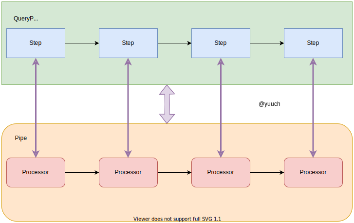
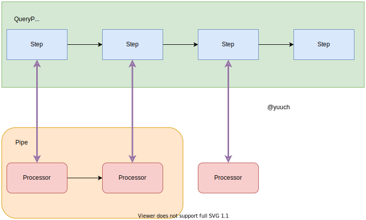
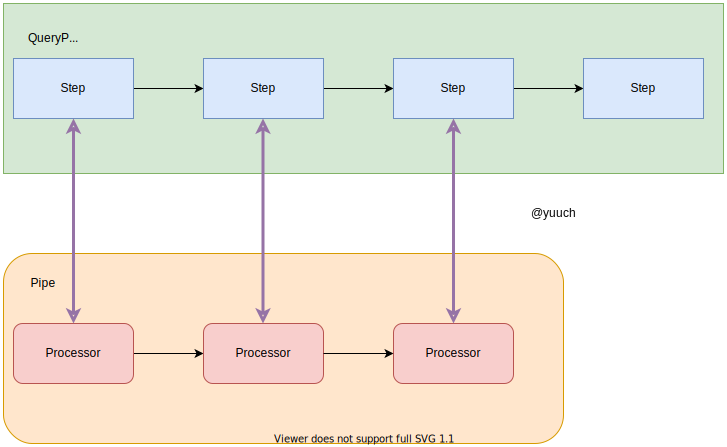
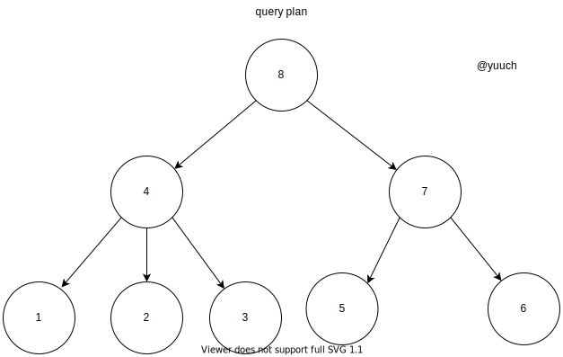
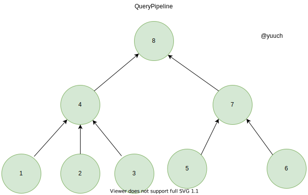

QueryPlan to QueryPipeline
首先，还是得说明一下什么是query pipeline? QueryPipeline是QueryPlan更详细的表达。 QueryPipeline中最重要的成员是一个Pipe， 这个Pipe将会与QueryPlan形成了一种对应的关系， 其中Step与Processor也会对应起来。

从前面的章节，我们已经得到了QueryPlan， 然后把每一个Step转换成Processor， 并与之前构建好的Pipe组合成一个更大的Pipe：
下图表示了从一个step生成一个Processor 
把生成的procesor加入到Pipeline 
就这样一步一步的，把step全都转换成processor， 最后完成了一个从QueryPlan到QueryPipeline的过程。
QueryPlan用来生成QueryPipeline的主要步骤就是在下边这个函数里：
QueryPipelinePtr QueryPlan::buildQueryPipeline(
const QueryPlanOptimizationSettings & optimization_settings,
const BuildQueryPipelineSettings & build_pipeline_settings)
{
checkInitialized();
optimize(optimization_settings);
struct Frame
{
Node * node = {};
QueryPipelines pipelines = {};
};
QueryPipelinePtr last_pipeline;
std::stack<Frame> stack;
stack.push(Frame{.node = root});
while (!stack.empty())
{
auto & frame = stack.top();
if (last_pipeline)
{
frame.pipelines.emplace_back(std::move(last_pipeline));
last_pipeline = nullptr; //-V1048
}
size_t next_child = frame.pipelines.size();
if (next_child == frame.node->children.size())
{
bool limit_max_threads = frame.pipelines.empty();
// Step 到 Processor
last_pipeline = frame.node->step->updatePipeline(std::move(frame.pipelines), build_pipeline_settings);
if (limit_max_threads && max_threads)
last_pipeline->limitMaxThreads(max_threads);
stack.pop();
}
else
stack.push(Frame{.node = frame.node->children[next_child]});
}
for (auto & context : interpreter_context)
last_pipeline->addInterpreterContext(std::move(context));
return last_pipeline;
}
上面那个函数第一眼看很绕，多看几眼之后就会发现它是一个类似于树的后序遍历(LRN)的算法。 因为执行计划不是二叉树，所以只能说是类似于LRN。

那么它的执行将会是按照
1 -> 2 -> 3 -> 4 -> 5 -> 6 -> 7 -> 8
的顺序遍历执行计划，并生成一个pipeline。 
回到代码本身，细看其中的Step是如何生成Pipeline的呢？
last_pipeline = frame.node->step->updatePipeline(std::move(frame.pipelines), build_pipeline_settings);
void FilterStep::transformPipeline(QueryPipeline & pipeline, const BuildQueryPipelineSettings & settings)
{
/* ignore this
...
*/
pipeline.addSimpleTransform([&](const Block & header, QueryPipeline::StreamType stream_type)
{
bool on_totals = stream_type == QueryPipeline::StreamType::Totals;
// Step to Transform(Processor)
return std::make_shared<FilterTransform>(header, expression, filter_column_name, remove_filter_column, on_totals);
});
/* ignore this
...
*/
}